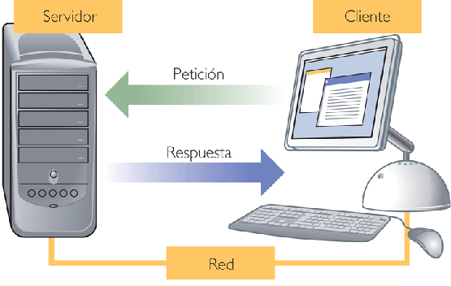
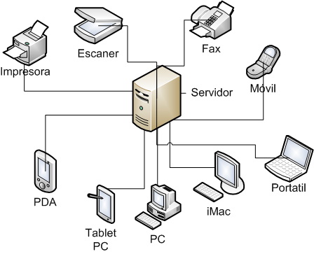
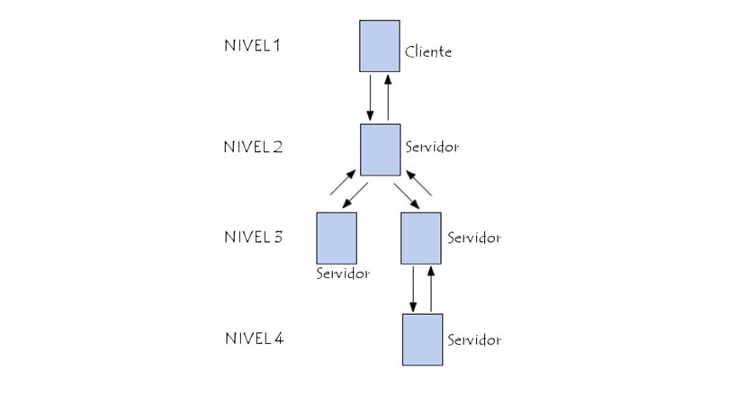

¿Qué es el nivel?
 El nivel significa la cantidad de procesos al envíar un mensaje que representa una petición. El mensaje se entrega a un receptor, que procesa la petición y envía un mensaje como respuesta. En secuencia, la réplica puede disparar posteriores peticiones, que llevan a nuevas respuestas, y así, sucesivamente.
ARQUITECTURA CON 2 NIVELES:

La arquitectura en 2 niveles se utiliza para describir los sistemas cliente/servidor en donde el cliente solicita recursos y el servidor responde directamente a la solicitud, con sus propios recursos. Esto significa que el servidor no requiere otra aplicación para proporcionar parte del servicio.
El cliente se comunica directamente con un servidor de bases de datos. Un primer modelo Cliente/Servidor de dos capas comenzó a emerger con las aplicaciones desarrolladas para redes LAN a finales de los 80 y principios de los 90. Estas aplicaciones se basaban en técnicas sencillas de compartición de archivo. Inicialmente, en el modelo de dos capas intervienen equipos que no tienen la característica de servidor de archivos en red y un cliente grueso inteligente, donde se hace la mayor parte del procesamiento.
ARQUITECTURA CON 3 NIVELES:
En la arquitectura en 3 niveles, existe un nivel intermediario. Esto significa que la arquitectura generalmente está compartida por:
Un cliente, es decir, el equipo que solicita los recursos, equipado con una interfaz de usuario (generalmente un navegador Web) para la presentación
El servidor de aplicaciones (también denominado software intermedio), cuya tarea es proporcionar los recursos solicitados, pero que requiere de otro servidor para hacerlo
El servidor de datos, que proporciona al servidor de aplicaciones los datos que requiere
El cliente se comunica directamente con un servidor de bases de datos.
ARQUITECTURA CON N NIVELES:

En la arquitectura en 3 niveles, cada servidor (nivel 2 y 3) realiza una tarea especializada (un servicio). Por lo tanto, un servidor puede utilizar los servicios de otros servidores para proporcionar su propio servicio. Por consiguiente, la arquitectura en 3 niveles es potencialmente una arquitectura en N-niveles.